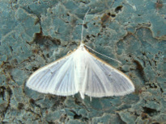
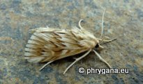
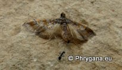
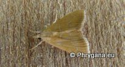

")
")
")
")
| PHRYGANA | Fauna | Flora | Galles | liste des espèces |
contact -
info - commentaires phrygana1 (at) gmail.com |
| Particularités crétoises | nouveautés | Mines | ressources naturelles |
| les Crambidae de Crète |
|
| Crète: sous-famille: Spilominae ==> 22 espèces | |||
|
|
|
||
| Antigastra catalaunalis | Dolicharthria bruguieralis | Dolicharthria punctalis | |
|  |
|
||
| Nomophila noctuella | Palpita vitrealis | Spoladea recurvalis | |
|
|
|||
| Udea ferrugalis | Udea institalis | ||
| En Crète, on compte 12 espèces au moins dans les Pyraustinae | ||||
") |
") |
") |
||
| Achyra nudalis | Loxostege sticticalis | Paracorsia repandalis | Pyrausta sanguinalis | Sitochroa palealis |
| En Crète, on compte 22 (sous)espèces au moins dans les Crambinae | ||||
") |
||||
| Euchromius ocellea | ||||
| En Crète, on compte 3 espèces au moins dans les Evergestinae | ||||
") |
||||
| Cornifrons ulceratalis | Evergestis isatidalis | |||
| Crète: sous-famille: Odontiinae ==> 5 espèces | |||
|  | |||
| Cynaeda dentalis | Epascestria pustulalis | ||
| Crète: sous-famille: Glaphyriinae ==> 2 espèces | |||
|  |  | ||
| Hydriris ornatalis | Prochoristis crudalis | ||
| 20 juillet 2013 |
| © paul fontaine -- © Phrygana.eu 2007 -- 2013 |